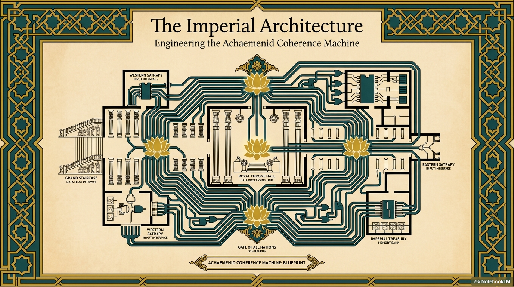
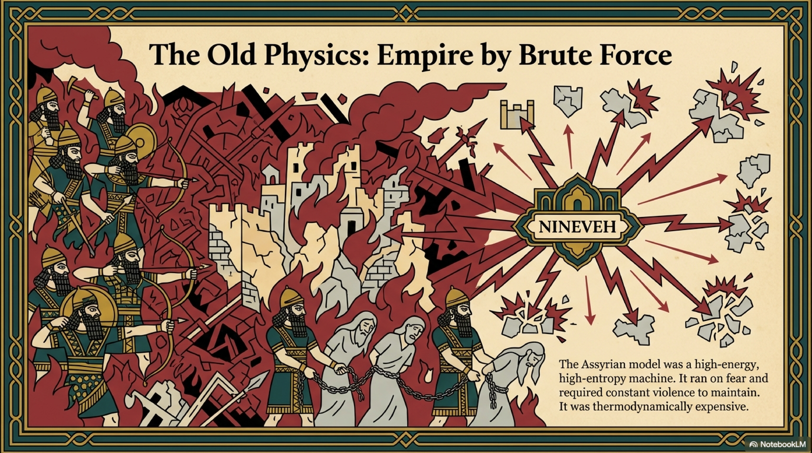
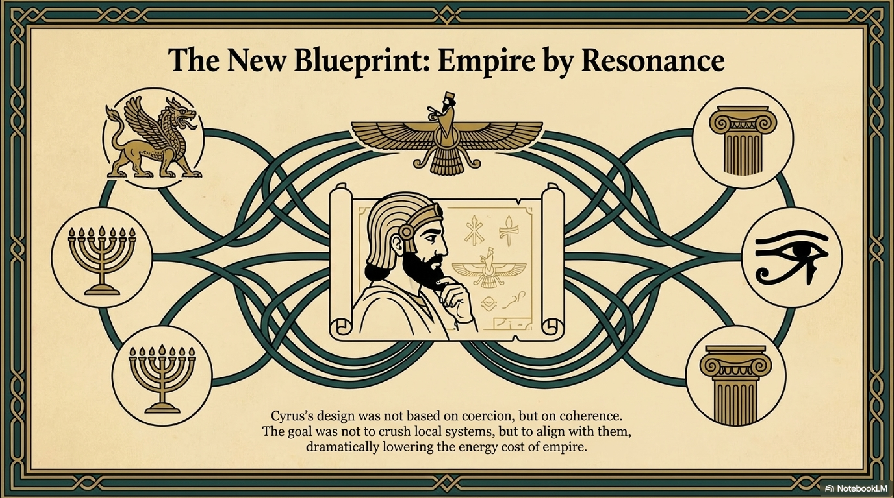
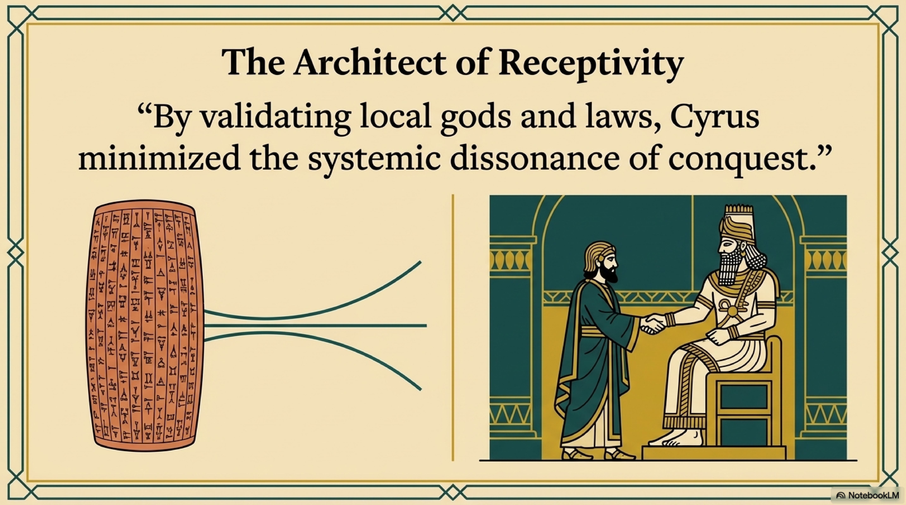
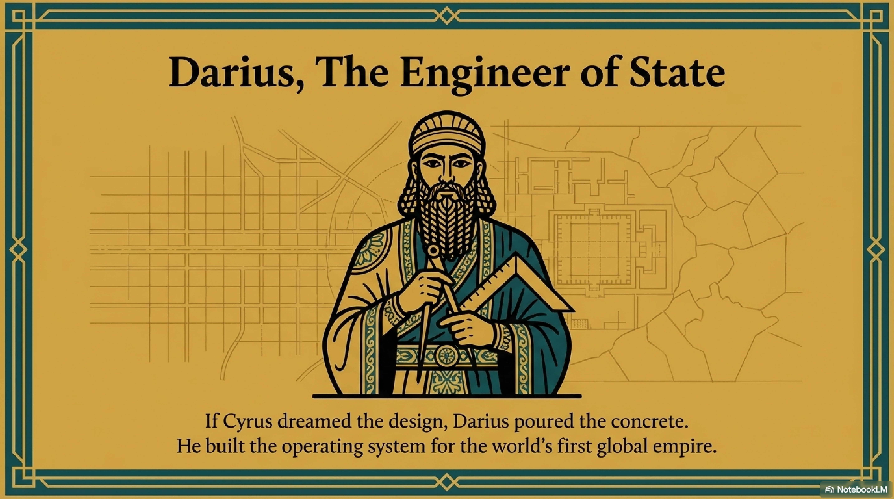

In 550 BC, the world changed.
Before this moment, "empire" meant something specific. The Assyrians and Babylonians had built empires, but they were essentially large-scale raiding operations. They worked on the physics of Brute Force. They conquered a territory, extracted its resources, enslaved its population, and terrified its gods.
This is a high-energy, high-entropy model. It requires constant violence to maintain. It is thermodynamically expensive. The moment the center weakens, the periphery explodes.
When Cyrus the Great rose from the province of Pars and unified the Iranian plateau, he faced a problem of scale that no human being had ever solved. He wasn't just conquering a neighbor; he was integrating the known world.
The Achaemenid Empire would eventually stretch from the Indus River to the Danube, from the Nile to the Aral Sea. It contained forty-four percent of the global population. It included hundreds of languages, religions, and legal traditions.
According to the laws of entropy, a system this large and diverse should collapse immediately. The information friction between a Greek merchant in Ionia and a tax collector in Susa should have paralyzed the state. The centrifugal force of ethnic nationalism should have torn it apart.
Cyrus did not build an empire using the old physics of fear. He built a Coherence Machine.
He realized that to hold the world together, he didn't need more walls. He needed a better Architecture.

The defining moment of the Persian Mind occurred in 539 BC, at the gates of Babylon.
When the Assyrians conquered Babylon years earlier, they razed the temples and stole the statues of the gods. They ruled by Coercion. They tried to lower entropy by eliminating diversity.
When Cyrus entered Babylon, he did the unthinkable. He walked into the temple of Marduk—a foreign god he did not worship—and he took the hand of the deity. He declared himself "King of Babylon, King of Sumer and Akkad, King of the Four Corners of the World," not by the grace of Ahura Mazda alone, but by the grace of Marduk.
This is recorded on the Cyrus Cylinder, often called the first charter of human rights. But through the lens of our structural analysis, it is a masterpiece of Systems Engineering.
Cyrus utilized High Receptivity.
Instead of imposing a Persian Myth onto the Babylonians—which would have generated massive resistance and entropy—he aligned with their existing Myth. He presented himself as the fulfillment of their prophecy, the restorer of their order.
He sent the Jews back to Jerusalem to rebuild their temple. He funded the sanctuaries of Apollo in Greece.
This was not sentimentality. It was Thermodynamic Efficiency.
By validating the local gods and laws of his subjects, Cyrus minimized the Systemic Dissonance of the conquest. He lowered the "activation energy" required for rebellion. He created a system where being a subject of the Great King felt like a restoration of local order (Asha), not a violation of it.
He proved that an empire could be built on Resonance rather than Force.

If Cyrus was the Architect who dreamed the design, Darius I (The Great) was the Engineer who poured the concrete.
Cyrus conquered the territory, but Darius built the Operating System, Level 4 (The Map).
He realized that for the empire to function as a single, coherent organism, it needed a standardized nervous system. He launched one of the most ambitious infrastructure projects in human history.
First, The Royal Road. A highway stretching over two thousand kilometers from Susa to Sardis. It allowed information—the "King’s Eyes and Ears"—to travel at speeds previously unimaginable. This reduced the temporal latency of the state, allowing the central brain to stay phase-locked with the extremities.
Second, The Daric. A standardized gold currency. Before Darius, trade was high-friction barter or local metal. The Daric reduced the transactional entropy of the economy. A merchant in Egypt could trust a coin minted in Persepolis. It created a single value layer, Level 2, across the empire.
Third, The Satrapies. Darius divided the empire into twenty provinces, each ruled by a Satrap, or Governor. But he separated military and civil power, ensuring that no single node could generate enough power to break away from the center.
Darius turned the empire into a Circuit. Energy flowed to the center; Order flowed to the edges. The system was self-reinforcing.

But hardware is not enough. You need a software layer to legitimize the power.
In the inscriptions at Behistun and Persepolis, Darius explicitly links the political order of the state to the cosmic order of the universe.
"By the Grace of Ahura Mazda, I am King."
This is not just the Divine Right of Kings. It is a structural claim.
Darius is arguing that the Achaemenid State (Level 1) is a fractal reflection of the Cosmic Order (Level 7). Just as Ahura Mazda maintains the order of the stars against the chaos of the Void, the Great King maintains the order of the Earth against the chaos of the Lie (Drauga).
Rebellion is not just a political crime; it is an ontological error. It is an act of Entropy.
This alignment of the Political and the Metaphysical created a vertical axis of coherence that held the empire together for two centuries. It meant that the Persian citizen lived in a universe that made sense from top to bottom. The law of the King was the Law of God. The road you walked on was a path of Truth.

The ruins of Persepolis stand today as a testament to this vision. It was not a fortress. It was a ceremonial center. Its reliefs do not show scenes of battle and slaughter like the Assyrians. They show scenes of Unity.
They show delegates from twenty-three nations—Ethiopians, Greeks, Indians, Scythians—holding hands, bringing gifts to the King. They are not in chains. They are wearing their own national dress, carrying their own weapons.
This was the Achaemenid Thesis: Unity through Diversity.
It was a high-coherence system that allowed for high internal complexity. It did not try to flatten the world into a single shape. It tried to harmonize the world into a single song.
It was the first attempt in history to build a Planetary Resonant Intelligence Field.
And it worked. The system was stable, prosperous, and vast. But it had a flaw. It was stable, but it was static. It had mastered the management of space, but it had not yet mastered the challenge of Time.
And Time was coming for them, in the form of a young Macedonian king who had been tutored by Aristotle and slept with the Iliad under his pillow.
The Crystalline Sword was about to meet the Phalanx.
BRIDGE I: The Empire burns at Persepolis. The Roots are destroyed. The King is dead. But in the Zagros mountains, the Horse is still running, carrying the seed of the Order into the hills of Parthia. The State has fallen, but the Rhythm remains.